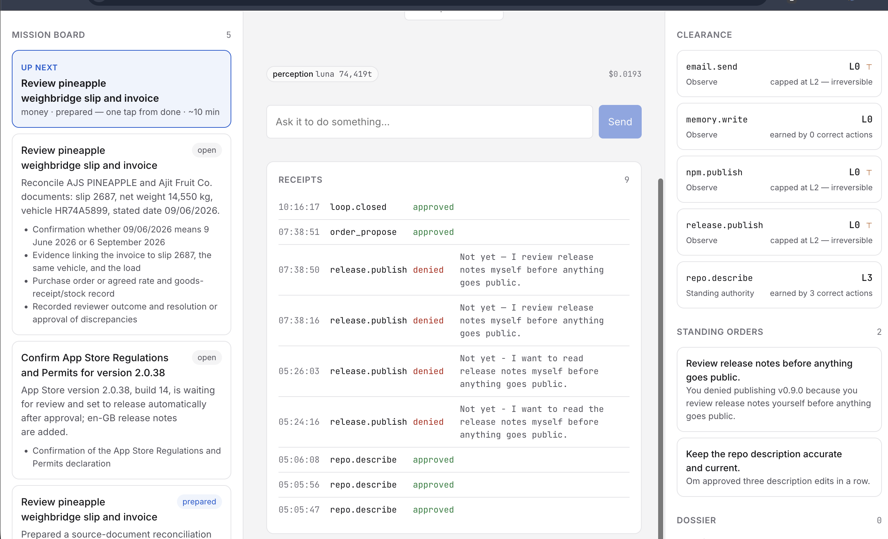

Press ⌃⌥⌘H when you walk away from something unfinished. Familiar works out what you left, writes the answers, and asks before it acts.
Apple silicon · free and open source · your captures stay on your Mac.
One keystroke crops the window you were looking at. No extension, no per-site setup — it works on anything with pixels.
What the thing is, which fields are filled, what is missing, and any deadline printed on the page — from a portal with no API.
Finished text you can paste, not a description of what to write. It stops before anything it cannot undo.
Familiar can earn the right to do anything it can undo. It can never earn the right to do what it can’t.
| Level | Reachable by | |
|---|---|---|
| L0 | Observe — read only | everything starts here |
| L1 | Prepare — draft and stage, never send | any action |
| L2 | Act with approval | any action |
| L3 | Standing authority — acts alone inside a rule you ratified | reversible actions only ⊤ |
It starts with zero permissions. Every decision you make becomes a rule it follows — and every action leaves a receipt.

Drag Familiar to Applications. First open, right-click it and choose Open — it is not notarised yet, so macOS asks once.
Familiar asks for it on first run and stores it in your keychain. Roughly $0.0003 per capture.
It starts everything itself. Grant Screen Recording when macOS asks, then hold your place anywhere.
Needs Node.js 22+, which Familiar uses to run its local service. Prefer to run from source?
Clone the repo and run ./scripts/dev.sh.